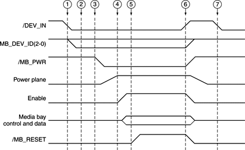

Sequence of Control Signals
Specific signals to the Paddington IC allow the computer to detect the insertion of a module into the expansion bay and take appropriate action. The sequence of events is diagrammed in
Figure 4-3
.
When a module is inserted, the computer performs the following sequence of events:
-
When a module is inserted, the /DEV_IN signal goes low, causing the Paddington IC to generate an interrupt.
-
System software responds to the interrupt and reads the DEV_ID pins to determine the type of module inserted.
-
System software sets the /MB_PWR_EN signal low, which turns on the power to the expansion bay.
-
System software sets the enable signal and internally notifies the appropriate driver of the presence of a newly inserted module.
-
System software sets the /MB_RESET signal high to bring the expansion bay module out of reset.
Essentially the reverse sequence occurs when a module is removed from the expansion bay:
-
When the module is removed, the /DEV_IN signal goes high. The Paddington IC responds by setting /MB_PWR high, the enable signal low, and /MB_RESET low, and generating an interrupt. System software responds to the interrupt and notifies the appropriate driver that the module has been removed.
When a module is resinserted into the expansion bay, the triggering event is the same:
-
When a module is reinserted, the /DEV_IN signal goes low. The Paddington IC responds by generating an interrupt, but keeps external signals deactivated, because the new device may be different from the one inserted previously.
Figure 4-3
Timing of control signals during module insertion and removal

© 1999 Apple Computer, Inc. – (Last Updated 29 April 99)